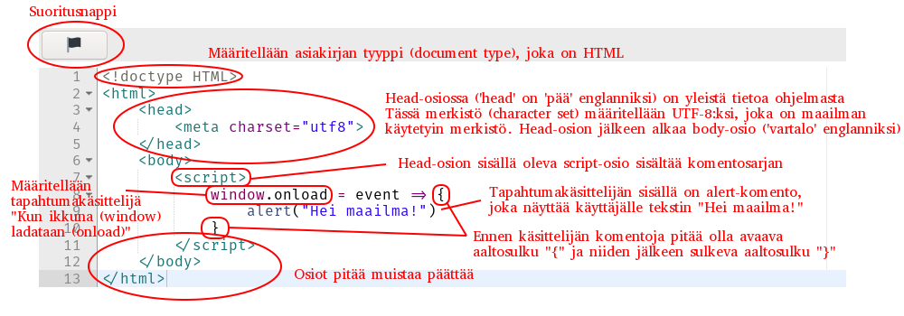

Ensimmäinen osa
Johdanto
Tervetuloa ohjelmoimaan!
Hötömölön alkeet
HTML tulee englannin kielen sanoista HyperText Markup Language eli suomeksi hypertekstin merkintäkieli. Hyperteksti tarkoittaa tekstiä, jossa on linkkejä (sana hyper on kreikkaa ja tarkoittaa "yli", hyperteksti tarkoittaa siis "tekstin yli"). Suurin osa nettisivuista sisältää hypertekstiä. Jotta tietokone osaa lisätä tekstiin linkkejä, sille on kerrottava, missä kohdissa tekstiä linkit ovat. Tätä varten on kehitetty hypertekstin merkintäkieli, jossa linkkejä merkitään sanojen ympärille asetettavilla tägeillä. HTML:ssä on myös muita tägejä, joilla voi lihavoittaa ja kursivoida tekstiä sekä tehdä muita asioita, joita opimme.
Alla on esimerkki HTML-koodista, jossa on sekä lihavoitettu sana että linkki.
Nettiselain näyttää koodin näin:
Tägi koostuu nimestä, joka on ympäröity kulmasuluilla.
Useista tägeistä on kaksi versiota: aloittava ja lopettava versio.
Esimerkiksi tägi <b> aloittaa lihavoinnin ja </b> lopettaa sen.
HTML:ssä tavallisen tekstien seassa olevilla tageilla voidaan merkitä erilaisia asioita. Alla on lista yleisimmistä tägeistä.
| Aloittava tägi | Lopettava tägi | Selitys |
|---|---|---|
<b> | </b> | Lihavointi |
<i> | </i> | Kursivointi |
<s> | </s> | |
<a href="osoite"> | </a> | Linkki |
<br> | ei ole | Rivinvaihto |
Tehtävä 1
Lisää tekstiin tägejä. Kokeile lihavoitusta, kursiivia ja yliviivausta. Lisää myös rivinvaihto johonkin kohtaan.
Älä poista tekstin alussa olevaa <!doctype HTML>-tägiä.
Saat nettiselaimen näyttämään tekemäsi muutokset painamalla  -nappia.
-nappia.
HTML:n osiot
HTML-tägeillä merkittyä tekstiä sanotaan asiakirjaksi. Nettiselaimen näyttämää merkittyä tekstiä sanotaan body-osioksi. On monia muitakin osioita. Koko asiakirjan sanotaan olevan html-osion sisällä. Head-osio sisältää lisätietoa asiakirjasta ja tiedostosta. Script-osiot sisältävät JavaScript-komentosarjoja, joita käsittelemme myöhemmissä luvuissa.
Kuten muotoiluilla, myös osioilla on jokaisella aloittava ja lopettava tägi. Alla olevassa taulukossa on yleisten osioiden tägit.
| Aloittava tägi | Lopettava tägi | Selitys |
|---|---|---|
<html> | </html> | Merkitsee koko asiakirjaa. Tägit on laitettava tiedoston alkuun ja loppuun. |
<head> | </head> | Sisältää lisätietoa asiakirjasta, kuten merkistön ja esimerkiksi nettisivun tapauksessa sivun otsikon. |
<body> | </body> | Sisältää asiakirjan varsinaisen sisällön, eli sivulla näkyvän tekstin, kuvat ja komentosarjat. |
<script> | </script> | Sisältää komentosarjan. Script-osiot ovat joko head- tai body-osion alaosioita. |
<style> | </style> | Sisältää lisätietoa siitä, minkä värisinä ja kokoisina eri tägit näytetään. Style-osio on head-osion alaosio. |
Osiot näyttävät tältä kirjoitettuna koodina:
On tärkeää, että osiot ovat tässä järjestyksessä ja että ne on aloitettu ja lopetettu oikeissa kohdissa. Html-osio alkaa asiakirjan alussa ja loppuu sen lopussa. Sen sisällä on ensin head-osio ja sitten body-osio.
Roskaa
Kirjoita alert("") komennon sisälle nimesi ja paina kuvaketta .